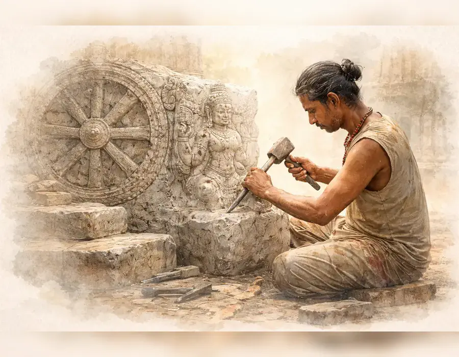
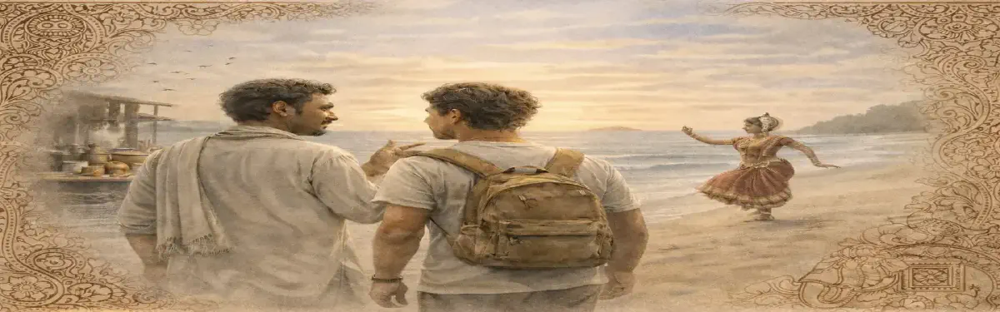
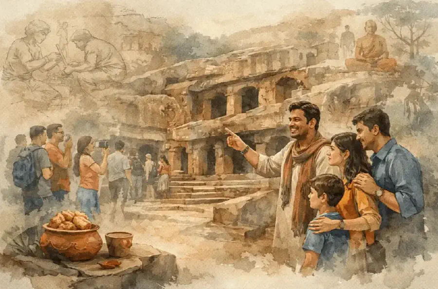
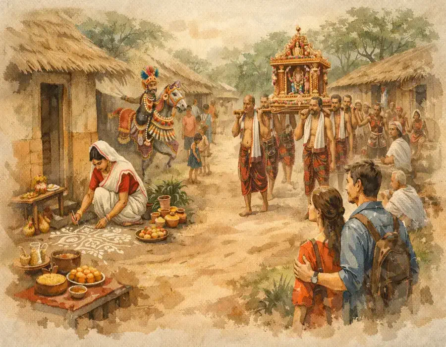
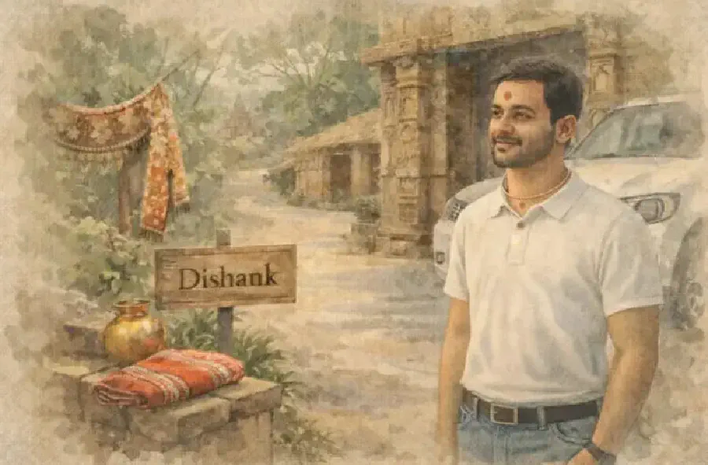

ओडिशा को सांस्कृतिक गहराई और ईमानदार स्थानीय मार्गदर्शन के साथ जानें
ओडिशा की यात्रा समझ के साथ करें — उलझन के बिना।
इसके मंदिरों, तटरेखाओं और जीवित परंपराओं को जानें — और निर्णय लेने से पहले किसी ऐसे व्यक्ति से बात करें जो इस भूमि को सच में जानता हो।

ओडिशा केवल देखा नहीं जाता। उसे महसूस किया जाता है।
प्राचीन मंदिर। जीवित हस्तशिल्प। तटीय शांति। गाँवों की लय। एक संस्कृति जो संग्रहालयों में नहीं, बल्कि रोज़मर्रा के जीवन में जीवित है।
Dishank आपको दिखाई देने वाली चीज़ों के पीछे का संदर्भ समझने में मदद करता है — ताकि आपकी यात्रा आकस्मिक नहीं, समझदारीपूर्ण लगे।
ओडिशा को केवल यात्रा न करें — उसे समझ के साथ खोजें।

यात्रा स्पष्ट होनी चाहिए। जटिल नहीं।
आज जानकारी बहुत है — लेकिन मार्गदर्शन दुर्लभ है।
डिशांक बातचीत को वापस लाने के लिए है। स्थानीय समझ। ईमानदार दृष्टिकोण।
ताकि आप सूचित होकर यात्रा करें — प्रभावित होकर नहीं।
सरल। ईमानदार। मानवीय।
हम शुरुआत लोगों से करते हैं — पैकेज से नहीं।
बातचीत पहले
हम सुनने से शुरुआत करते हैं।
ईमानदार मार्गदर्शन
सच्ची अपेक्षाएँ। वास्तविक संदर्भ।
विचारपूर्ण यात्रा सहयोग
हर व्यवस्था स्पष्टता और देखभाल के साथ।
आपकी यात्रा — आपकी गति, आपका आराम, आपकी समझ।
यह उपभोग नहीं है। यह संबंध है।
हम ओडिशा आपको बेचने के लिए नहीं हैं। हम यहाँ हैं ताकि आप उसे समझें — और स्वयं निर्णय लें।
यात्रा सहयोग जो व्यक्तिगत लगे
- रहने की व्यवस्था
- स्थानीय परिवहन
- सांस्कृतिक अनुभव
- मंदिर दर्शन और विरासत मार्ग
- यात्रा के दौरान स्थानीय सहायता
निर्णय लेने से पहले सब स्पष्ट। न कोई अनुमान। न कोई आश्चर्य।

सिर्फ़ दर्शनीय स्थलों से परे।
ओडिशा केवल गंतव्य नहीं है।

यह परंपराएँ, कहानियाँ, भोजन, उत्सव और रोज़मर्रा का जीवन है। हम ऐसी समझ साझा करते हैं जो आपको इसे सोच-समझकर अनुभव करने में मदद करे — केवल देखने के लिए नहीं।
वह रेखा जिसे हम पार नहीं करते
यात्रा को स्वतंत्रता के रूप में प्रस्तुत किया जाता है। लेकिन अक्सर वह उन प्रोत्साहनों से आकार लेती है जिन्हें यात्री देख नहीं पाते।
सलाह प्रभावित होती है। मार्जिन छिपे होते हैं। स्पष्टता दुर्लभ हो जाती है।
Dishank की शुरुआत किसी बोर्डरूम में नहीं हुई।
एक सह-संस्थापक ने टैक्सी चलाई। दूसरे के पास अपनी टैक्सी थी।
उन्होंने यात्रा को सड़क के स्तर से देखा — और जहाँ समझ होनी चाहिए थी, वहाँ भ्रम देखा।
उन्होंने अलग तरह से निर्माण करने का निर्णय लिया।
Dishank प्रतिस्पर्धा के लिए नहीं बनाया गया। इसे सुधार के लिए बनाया गया।
सत्य विलासिता है।
इसलिए नहीं कि वह महँगा है — बल्कि इसलिए कि वह दुर्लभ है।
एक ऐसी व्यवस्था में जो जल्दबाज़ी और मनाने पर आधारित है, सत्य संयम मांगता है। और संयम चरित्र मांगता है।
Dishank चरित्र चुनता है।
कुछ भी योजना बनाने से पहले — एक बार बात करें।
न कोई भुगतान। न कोई दबाव। केवल स्पष्टता।
एक ईमानदार बातचीत आपकी यात्रा को सुरक्षित रखने के लिए पर्याप्त है — किसी से भी, हमसे भी।
Dishank से बात करें
ओडिशा से।
ओडिशा शोर नहीं करता।
यह स्वयं को आक्रामक रूप से प्रचारित नहीं करता।
यह अनुष्ठानों, नदियों, वनों, रसोई और संवादों में जीवित है।
अधिकांश यात्री केवल सतह देखते हैं।
यदि आप उससे आगे देखना चाहते हैं —
समय लेकर आएँ, और उद्देश्य के साथ आएँ।
हम यहीं रहेंगे।
शिसुपालगढ़, भुवनेश्वर, ओडिशा, भारत
व्हाट्सऐप: +91 9827131776